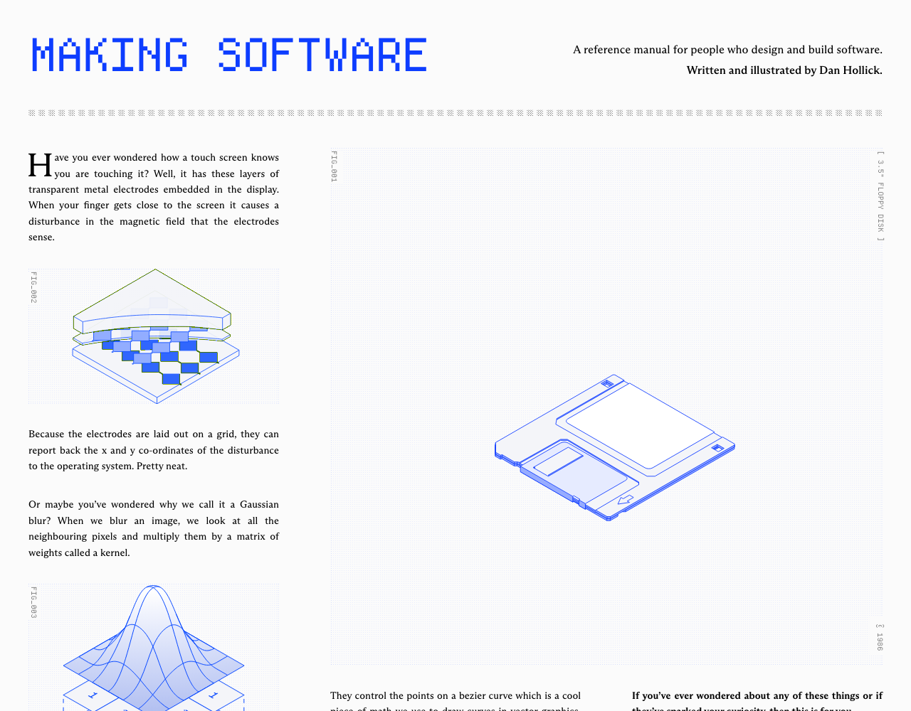
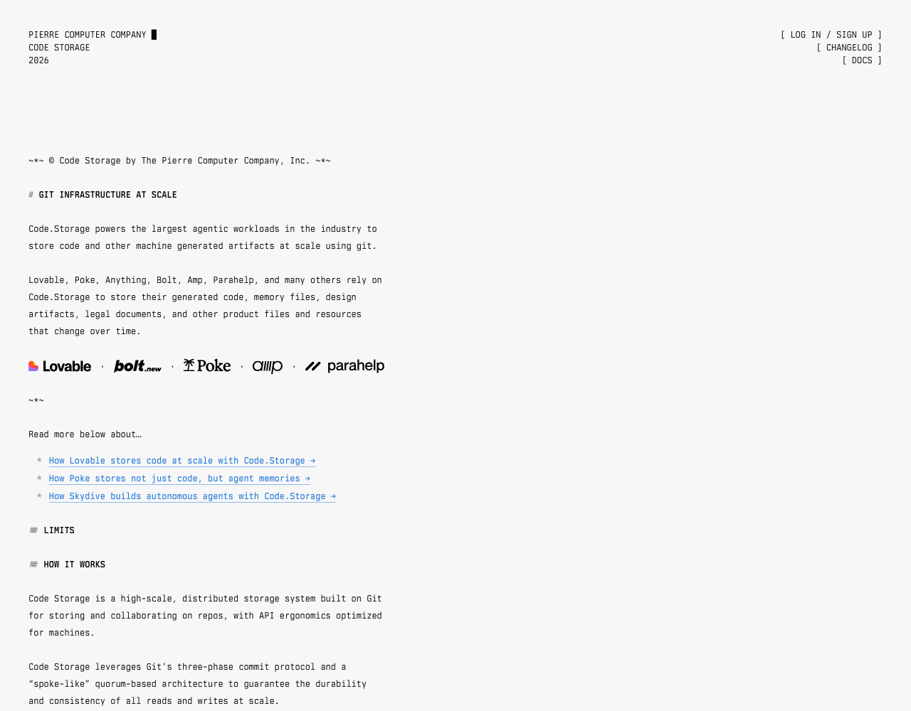
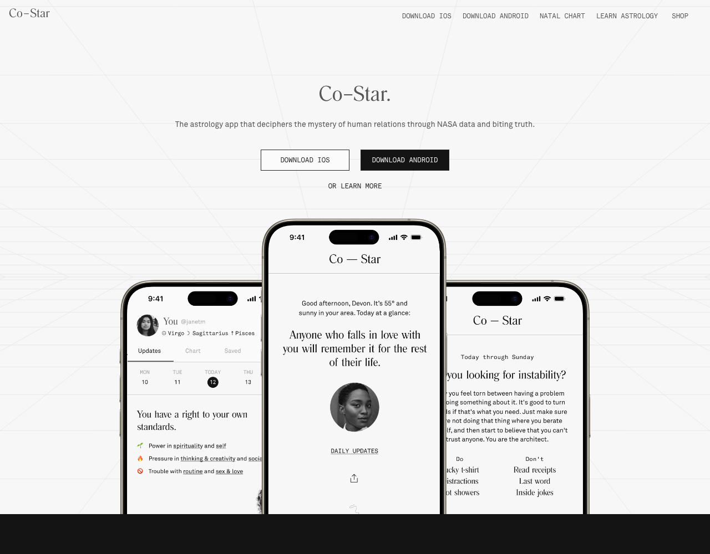
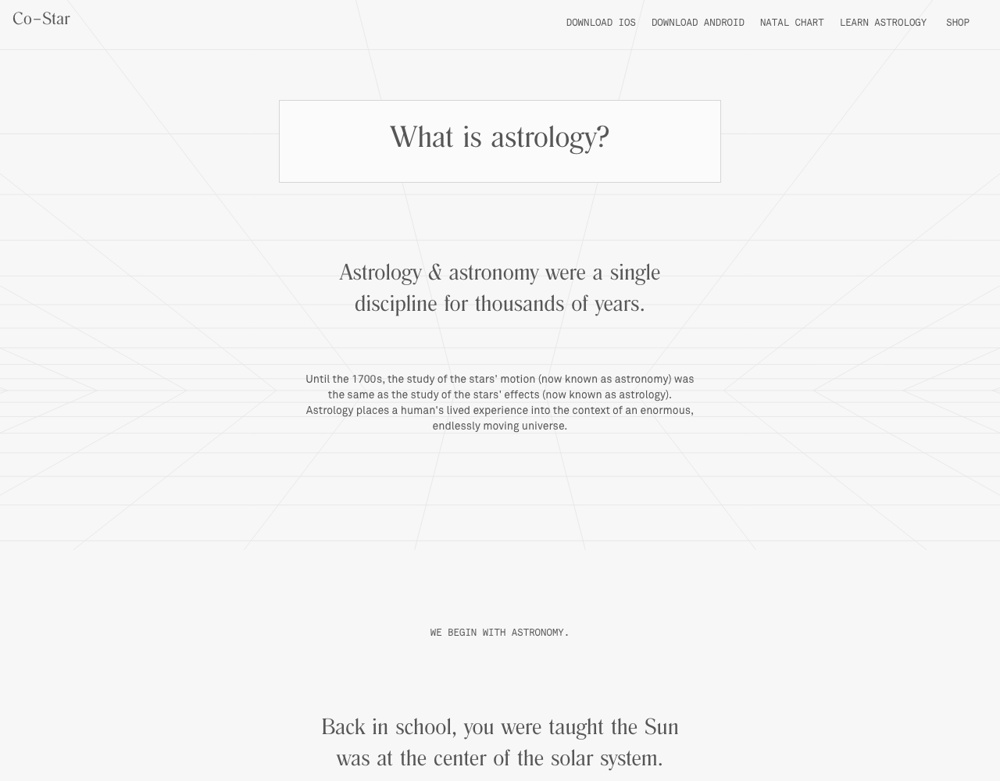
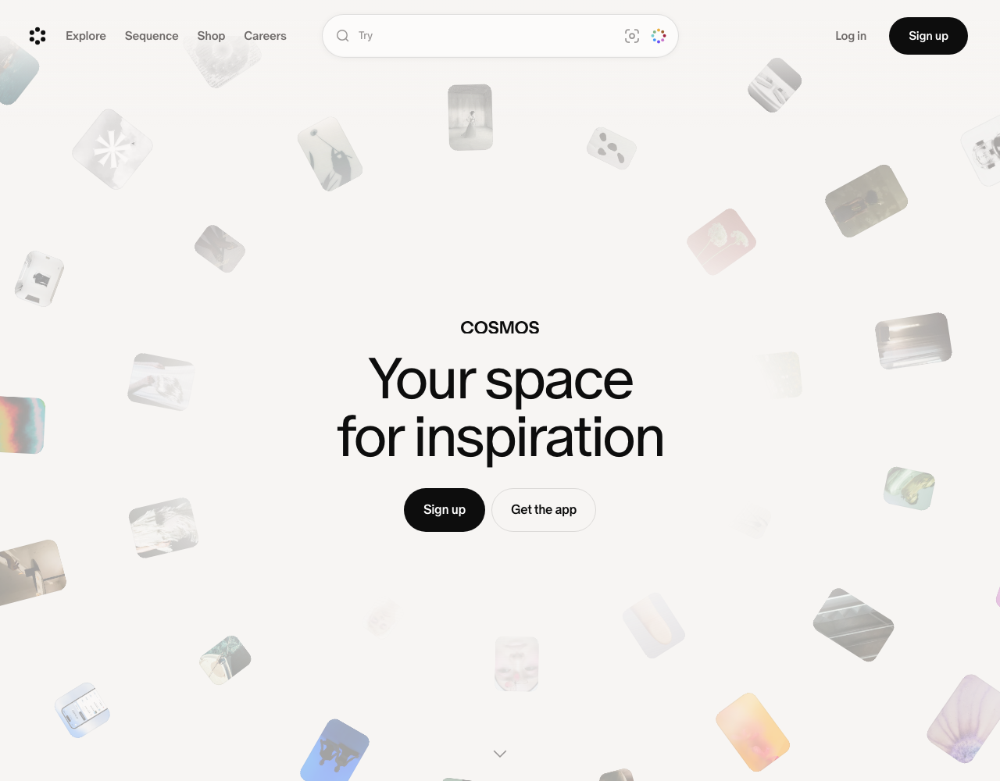
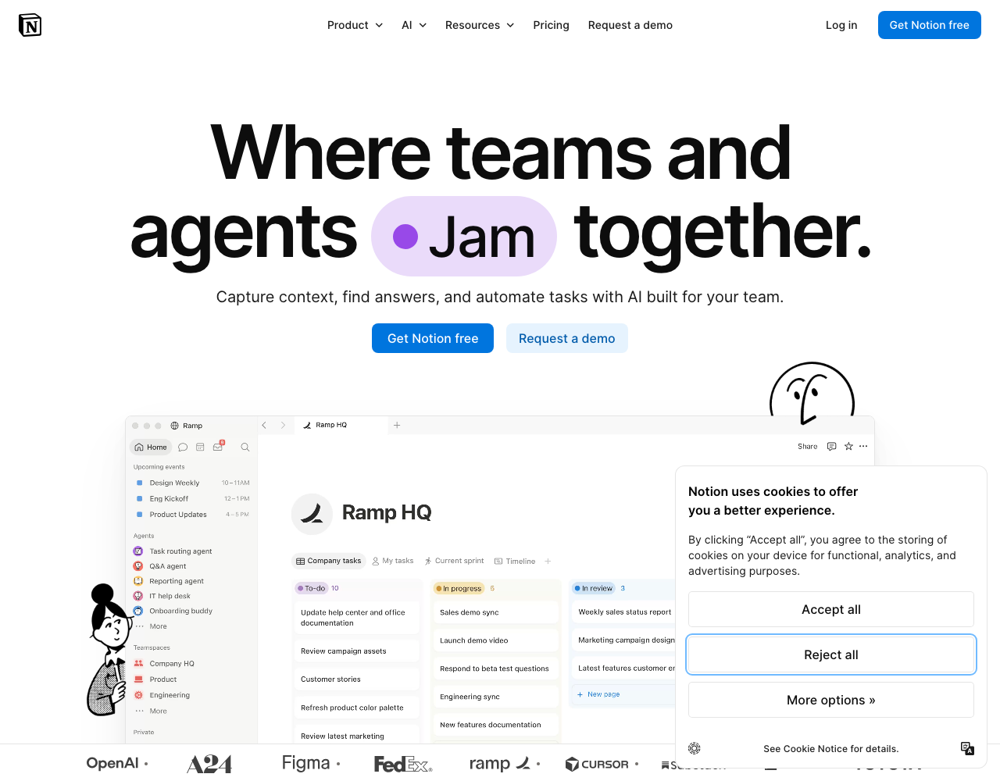
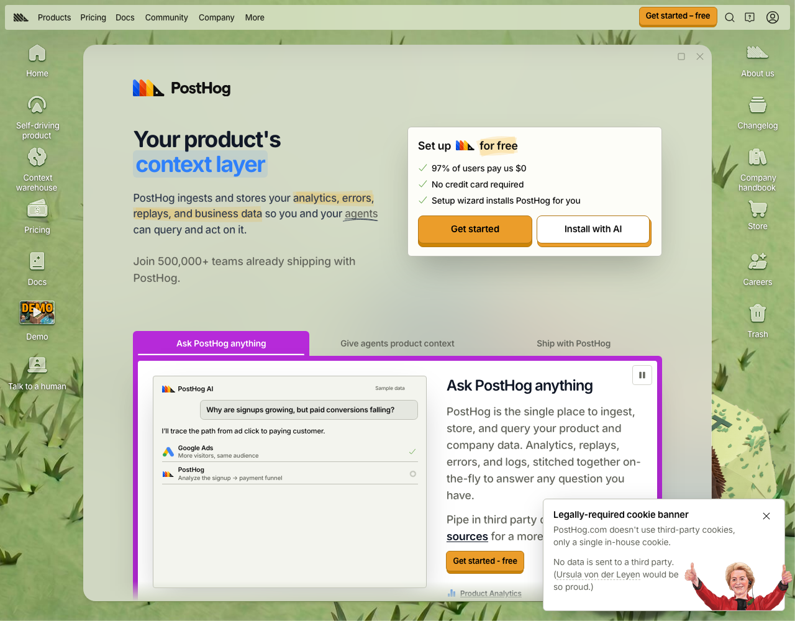
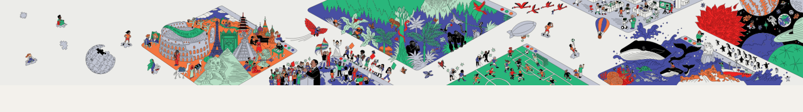

Draft 2. Your marks on draft 1 are folded in: six references dropped, Co-Star and Cosmos added, the feel reworded, the three feels rebuilt around what you kept. One thing to check before I build: the three feels below.
A manual for a way of working, written by someone who finds it genuinely exciting.
Calm and passionate. Friendly, informal, a bit jokey, with an evangelical edge. The passion is for simplicity, craft, openness, freedom. On a page:
Rebuilt from what you kept. Each starts from different references. Next round: three full front pages, one per feel, stacked on one page. Same headline on all three (see below). Say go, or swap one.
Direction 1's figures, grid, blue and serif, plus one isometric flat-colour panel with people in it as the hero, and smaller panels per section. Warmth from drawing, not from palette. The safe one.
The page reads as markdown source: # headings, * bullets, mono-led, one clever explanatory viz above the fold. The ink tai chi figure for the human. Your pure monospace option. Risk: boring unless the viz and figure carry it.
Calm and centred. Faint perspective grid, elegant serif display, mono caps, one idea per screen. The front page tells the story as you scroll, with Wikimedia-colour touches. The out-of-the-ordinary one. Risk: too meditative for a site with many doors.
Kept: makingsoftware, code.storage, Wikimedia, Notion (for content only), PostHog (for tone only). Added: Co-Star, Cosmos. Dropped: Ciechanowski, 100 Rabbits, gwern, Oxide, Basecamp, Obsidian. Way Into AI stays the model for the process.

TakeNumbered figures, dotted grid, cobalt line drawings, serif prose beside them. Explaining from the ground up. The manual.
LeaveThe coldness. Beautiful, but technical diagrams only. We add people and colour.

TakeThe design, the way of explaining, and a viz that explains the concept cleverly and beautifully. The page as markdown source.
LeaveThe 3D blob. Far too elaborate for us.

TakeLight paper, faint perspective grid, elegant narrow serif, mono caps labels, lots of air. Centred and calm, with "biting truth" in the copy.
LeaveThe phone mockups. The grey-on-grey is a touch too faint for reading.

TakeOne idea per screen, big serif sentence then a short paragraph, mono caps as section markers ("WE BEGIN WITH ASTRONOMY"). This is how "how it ate the world" could be told.
LeaveThe pacing for the front page. A bit too much for us, as you said. Use it for the story, not for every page.

TakeAir. One huge light headline, small floating objects that hint at the content, nothing else. Confidence in emptiness.
LeaveThe floating cards as a device. Ours would be floating markdown marks or files, if anything.

TakeClear content writing. And the subject: "how to replace Notion with the markdown-based ecosystem" is a page we owe.
LeaveThe design. Meh for us.

TakeNo-nonsense tone of voice, turned down a notch. A bit too arf-arf for us.
LeaveThe site. A pig, as you said.

TakeThe colour and the design. People, little isometric panels, flat fills with ink outlines. A touch of this beside the blue, or its colours instead of the blue. The human feel every feel needs.
LeaveThe scale. One panel at a time, not a mural.
Name as headline. Option 4 as the subtitle. The philosophy on a third line, quieter. The thesis as a small mono kicker above. On all three pages next round:
Third line carries the second meaning of the Way. Wording loose; the page will fix it.
Then: three full front pages, stacked on one page, same headline on each.